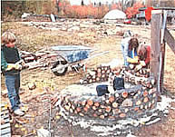
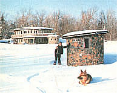
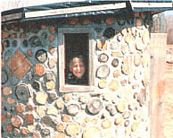
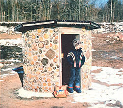
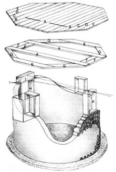

For ten years now, I've had a love affair with an ancient building technique called cordwood masonry, in which walls are made of short logs - called log-ends - stacked like firewood and bonded together with a strong mortar matrix.
My wife, Jaki, and I have built three houses utilizing this method, as well as a number of smaller buildings such as sheds and saunas. So we weren't surprised when, in the fall of 1983, our seven-year-old son decided he should have his own cordwood clubhouse. Rohan already had a working knowledge of the medium, having heard me speak to students at our cordwood workshops and having assisted in a small way in the construction of our present house, Earthwood. Also, cordwood is a simple (and not very strenuous) form of construction, appropriate for builders from age 6 to 96. At any rate, our entire family rallied behind his idea and designed a playhouse that would be in architectural harmony with the rest of Earthwood's buildings. During construction, in fact, Rohan's project became known as Littlewood.
The Earthwood group of structures consists of a round (38' 8" in diameter), two-story house . . . a 10'-diameter sauna . . . and a 20'-diameter shed. After pouring the floor for the shed, the driver of the concrete truck advised us that we had a little over a quarter of a cubic yard left. Without a clear purpose in mind, I asked him to dump this concrete about 150 feet to the south of the house on a thick vein of sand in the abandoned gravel pit in which we chose to build our dwellings. This impromptu site overlooks a pleasant little spring-fed skating pond and is close to Rohan's school-bus stop.
With a shovel and trowel, I flattened the concrete, producing a relatively smooth slab that's about 3 inches thick and just over 6 feet in diameter. A year later, this slab, protected from the effects of frost by the excellent percolation of the sand, became the foundation of Littlewood.
In building a permanent cordwood dwelling, a double mortar matrix is employed . . . with the inner matrix separated from the outer by an insulated space. This assures that heat is at no point conducted directly from the inner to the outer mortar joint. Rohan's clubhouse, however, wouldn't be heated, so we felt that a single mortar matrix was sufficient.
Virtually any kind of wood can be used for cordwood masonry, as long as it's relatively dry, stripped of its bark, and not spongy (or "punky," as they say in the North Country). We had a number of 16" cedar log-ends left over from the house construction. Cutting each of these into thirds, Jaki and I produced a pile of little log-ends, each just over 5 inches in length. They varied in diameter from less than 2 inches to about 6 inches.
Rohan and I located the approximate center of the slab and, with a crayon, drew two concentric circles on the concrete: one with a 30" radius and the other with a 35" radius. These established both the location and thickness of the cylindrical wall of the building.
With that done, I was almost ready to turn Rohan and his friends loose. Before they could begin, though, a doorframe had to be built, plumbed, and anchored to the slab.
I chose old 2 X 6 planking for both the doorframe and the window frames (which were added later). The door opening is 16" wide and 54" high - child-size and in proportion to the building. The base of its frame was anchored to the slab by drilling 3/8"-diameter holes into the concrete with a masonry bit, and boring corresponding holes into the end grain of the bottom of the doorjambs; headless bolts served as anchoring pins. Next, I drove two stakes into the sand, each approximately 4 feet from the base of the doorposts, and joined these to the top of the frame with temporary diagonal bracings made of 1" lumber. Another 1" board was fastened, at a diagonal, to the top of and one side of the doorframe, assuring that the structure would remain plumb and square during construction.
A few days later, after school had closed for the afternoon, I carted a wheelbarrow load of our special mortar (see the accompanying sidebar) over to the clubhouse site, and Rohan and I began to work. The technique is easy to explain and almost as simple to perform!
To begin, I laid down a 1"-thick by 5"-wide layer of "mud," using the crayon marks as guides. Although a trowel may be employed for this job, it's faster and easier to do it by hand, using rubber gloves. Be sure to avoid handling the mortar with your bare hands, as doing so can cause nasty little "cement holes" in the skin, which are painful and slow to heal. This advice is particularly important for children! (Adults will likely find that heavy masonry gloves are best, although they take a while to get used to, while the smallest ladies' household gloves will provide a little one with an adequate, albeit loose, fit.)
Log-ends are set into the first course of mud with a gently vibrating motion. If pressed hard, they'll cause the mortar to crumble and ooze excessively. Split, hemispherical logends are good pieces to start with, since their flat sides correspond to the level mortar joint. The rest is easy! After a number of log-ends have been laid - perhaps the entire first course - a second course of mud is placed on the wall, following the hills and valleys defined by the shapes and sizes of the wood on the first course. After mudding, the builder simply surveys the space he or she wants to fill, takes a mental picture of the size and shape of log required, and looks to the nearby woodpile to find an appropriate piece. Practice speeds up the selection process, and with a little guidance in the beginning, even youngsters seem to pick up the knack quickly enough.
Ideally, when you're working on a building meant for habitation, it's good to surround each log-end with about 1 inch of mortar. This promotes strength and ease of pointing - or grouting - the mortar joint. Of course, we weren't very concerned about the quality of Littlewood's pointing or the consistency of its mortar joints. The idea was for the children to have fun and to end up with a sturdy little clubhouse. Still, we did show them how to do a rudimentary job of pointing mortar, both to improve the texture of the wall's surface and to fill any great gaping holes.
Pointing is easily done with an old kitchen knife that has had the last inch of its blade bent back about 30°. It's used to cut away protruding mortar, to push this excess material into any recesses, and to smooth the joints to both tighten the bond between wood and mortar and improve the appearance of the wall. Children get bored quickly with the pointing process, but they love to lay up mud and wood, so it's best not to expect them to be too fastidious.
I taught Rohan how to read my 4' level, which he used to keep the walls plumb. However, it's a good idea for an adult to look in on the project fairly regularly to make sure that the growing wall is still in harmony with the planet's prevailing gravity. Little ones can't mix their own mortar anyway - so a parent will have to stay pretty close at hand.
When Rohan and his friends - we dubbed them the Termite Construction Company - had built the walls up to window height, the autumn weather turned, and little fingers in thin rubber gloves soon got too cold. (This sort of project would be better suited to summertime.) Jaki and I finished the cordwood up to roof height in two afternoons, with Rohan helping after school as much as conditions allowed.
The door (which faces east away from prevailing winds) and three windows are the sole light sources in the building, one of which looks out upon each compass point. The window frames were set in the cordwood masonry in such a way that the tops of the frames would be level with the top of the doorframe.
I built the octagonal roof in one piece, using recycled 2 X 6 tongue-in-groove silo boards, as shown in the illustration. The roof is tremendously strong and, naturally, quite heavy, as Jaki, a neighbor, and I discovered when we carried it through the early November snow to Littlewood.
The roof keyed into the top of a 6" by 6" door lintel and the western window frame (see illustration), establishing a 6" in 7' roof pitch from east to west. We shimmed over the north and south window frames with log-ends to steady the- roof octagon. Later, I filled in the space between the top of the wall and the underside of the roof with log-ends and mortar.
Prior to its installation, we had covered the roof with two layers of 6-mil, black polyethylene - a stopgap measure, of course, because of plastic's poor resistance to the sun's ultraviolet rays. We'll cover the plastic - or recover the roof - later this year . . . probably with heavy, half-lapped roll roofing.
The door, simple and rustic, is in harmony with the cordwood style of building and the concept of a child's clubhouse. For windows, we just screwed plexiglass onto the outside of the frames, leaving the inside sills to serve as little shelves.
Other "design features" were incorporated right into the walls, such as covered jars for storage, marbles for fun, and spy holes made of 5-1/2" lengths of various scraps of PVC and ABS pipe, each fitted with removable log-end plugs. (Cordwood masonry brings out the child in all of us, evidence of which shows up even in houses built by adults.) By using recycled and leftover materials, we kept the total expenditure to less than $10, most of which was spent on lime and cement.
All 2 X 6 stock; tongue-in-groove silo boards for all roof pieces; sized planks for doorframe and window frames.
(10) A 7'0"
(2) B 6'2"
(2) C 5'4"
(2) D 4'6"
(4) E 3'8"
(4) F 2'0"
(4) G 3'0"
Doorframe:
• (2) H 4'6"
• (1) I 2'0"
Window Frames:
• (6) J 1'0"
• (6) K 1'6"
The possible variations on the cordwood clubhouse theme are almost limitless. For one thing, the building certainly doesn't have to be round. Almost any dwelling style, from A-frame to Zulu hut, can be scaled down to clubhouse size. One sturdy option is a rectilinear design framed by 6" X 6" corner posts and plate beams. The masonry, in this case, is used as infilling and isn't load-supporting.
One of the best, and simplest to install, frost-proof foundations is the floating concrete slab. If your area isn't blessed with sandy subsoil, you can scrape away organic material and loamy topsoil from the site - a valuable resource in your garden - and dump a load of coarse sand on the cleared area. For a small building, a foot of uniformly compacted sand should be sufficient to draw away water from below the structure, eliminating frost heaving.
As for the foundation itself, I think a 3"-thick reinforced slab is ample for a clubhouse or outbuilding. A 6'-diameter structure will require 7 cubic feet (a little over a quarter cubic yard) of concrete. You can mix your own in a wheelbarrow. Five loads of the following will make about 7-1/2 cubic feet of concrete: 6 rounded shovels of crushed stone, 4 of sand, and 2 of portland cement.
Another option for a rectilinear clubhouse foundation can be made by simply setting railroad ties or treated timbers right into the compacted sand and building up from there.
This article, of course, is not intended to instruct the reader in the construction of a cordwood home - my book Cordwood Masonry Houses does that - but it will, if fairly dry wood is used and our mortar recipe is followed, allow anyone (even an adult) to build a beautiful clubhouse. And when you see how easy and how much fun this technique is, you'll probably want to go on to build a sauna, a studio, or maybe even a full-size house. When you're ready, get in touch. I'll do what I can to get you started in this beautiful, energy-efficient, economical, and ecologically attuned building system.
If gently rounded shovelfuls are used, this recipe will make a medium-size wheelbarrow load of masonry mud: Mix 9 parts sand (washed or passed through a 1/2" screen), 3 parts masonry cement, 3 parts soaked sawdust (see note below), and 2 parts hydrated or Type S builder's lime. If portland cement is used instead of masonry, use 2 parts portland and 3 parts lime. The mixes are equivalent.
Dry-mix the ingredients in a wheelbarrow until the color is consistent. Add water, a little at a time, and beat the mix with a hoe. The mud should be stiff enough to hold its shape against an adjacent log-end, but not crumbly. A common tendency among firsttimers is to mix the mud too soupy, so it's a good idea to make the first batch or two small, in case additional dry ingredients are required for stiffening. I can't tell you exactly how much water to use, as this will vary with the moisture content of sand and sawdust.
Note: The sawdust in this recipe slows the set of the mortar, eliminating shrinkage cracks. We use sawdust from cutting firewood or from a sawmill. In either case, it should be passed through a 1/2" screen to remove large particles and strips of bark, then soaked overnight in a wheelbarrow or children's plastic wading pool.
EDITOR'S NOTE: Author Rob Roy has written five books on cordwood and earth-sheltered building systems, including Cordwood Masonry Houses (Sterling, 1980) and Earthwood (Sterling, 1984). He can be contacted at his Earthwood Building School, RR 1, Box 105, West Chazy, NY 12992.
|
 (PHOTOS BY THE AUTHOR) The Termite Construction Company, made up of seven-year-olds, was able to finish the clubhouse to window height before winter nipped the children's noses and Mom and Dad took over. |
 (PHOTOS BY THE AUTHOR) The playhouse provides shelter for Rohan and his friend as they wait for the school bus. |
 (PHOTOS BY THE AUTHOR) Every child needs his or her own private place. |
|
 An east-facing door and thick cordwood walls offer protection from the prevailing winds. |
 |
|